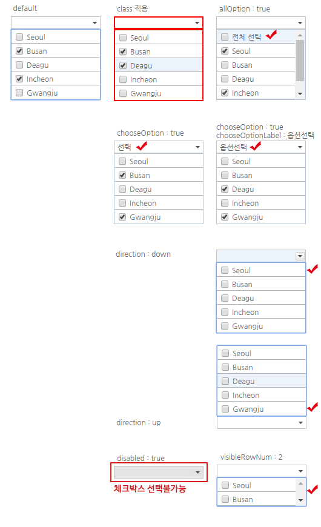
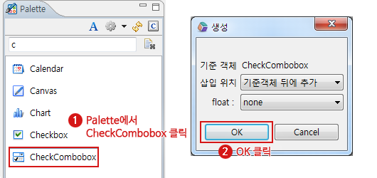
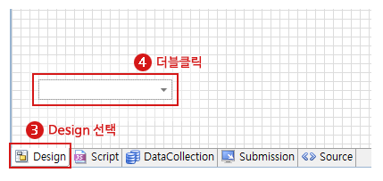
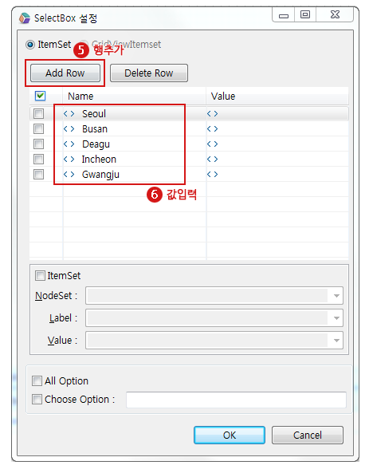
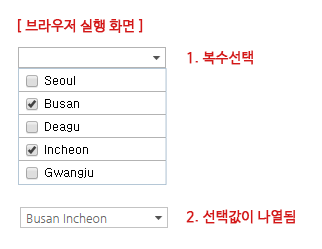
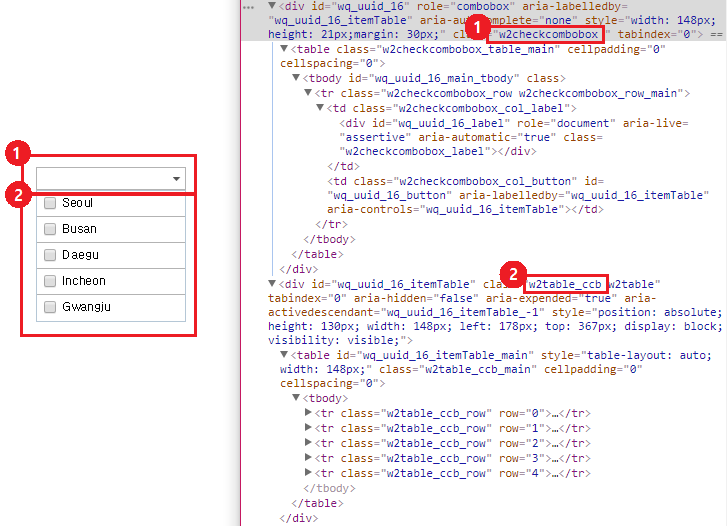

13.CheckCombobox
수정 일자 버전 (SP2)
WebSquare5 Studio : 20180117_1349_x86_B
WebSquare5 Engine : 5.0_2.2982B.20180223.154326_1.5
HTML의 select Tag에서 확장된 기능을 제공하는 컴포넌트로 selectbox와 checkbox가 결합되어있어 항목을 다중으로 선택할 수 있습니다.
13.1Property
Property | Description |
|---|---|
| [default:false, true] 전체항목 표시 여부로 label은 "-전체-" 로 value는 "all" 로 설정된다. |
animation SP2 | itemtable의 animation을 설정한다. |
appearance | xforms select1의 appearance속성 |
checkboxClickSync | [default:false, true] 목록의 checkbox를 클릭시 선택된 아이템셋과 싱크를 맞출지 여부 |
checkDisabledOnAllCheck SP2 | [default:true, false] 전체 선택시 disabled 처리된 항목도 함께 선택하는 기능. true (기본 값): 전체 선택 시 disabled 처리된 항목도 함께 선택. false: 전체 선택 시 disabled 처리된 항목은 선택하지 않음. |
| [default:false,true] 선택항목 표시 여부로 chooseOptionLabel속성이 설정되어 있지 않으면 label은 "-선택-"으로 value는 ""(empty string)으로 설정된다. |
chooseOptionLabel | chooseOption속성이 true로 설정 된 경우 label에 표현 될 text를 정의 한다. |
| HTML의 class속성과 동일한 기능을 제공하며 css파일 또는 style블럭에 정의 한 class를 1개 또는 공백(space)를 이용하여 다중 적용이 가능하다. 기본적으로 엔진 내부에서 각 컴포넌트 마다의 class를 적용하고 있으며 해당 class를 이용하여 컴포넌트의 css를 공통으로 적용 할 수 있다. |
closeonmouseleave | [default:false, true] subLayer open되어 있을때, mouseleave 이벤트에 의해 닫을지 여부 |
delimiter | displayMode속성에서 참조하고 있으며 value와 label을 함께 표현 할 때 사용하는 구분자이다. displayMode속성의 "delim"에 해당하는 값이 본 속성에 정의 된 값이다. |
direction | [defulat:auto, down, up] 항목의 열림 방향. |
| [default:false, true] HTML의 disabled속성과 동일한 기능을 제공하며 컴포넌트를 비활성화 시킨다. |
displayMode | [default:label, value delim label, label delim value] 항목의 표현 방법으로 label과 value를 함께 표현 할 수 있다.delim(구분자)는 delimiter속성에 정의 된 값을 참조한다. |
displaymessage | [default:false, true] validate API를 호출 하였을 때 검증 실패에 대한 결과 메세지를 표시 할지의 여부. 기본적으로 엔진에서 정의 된 메세지가 표현되며 별도의 메세지를 정의하고자 할 때는 invalidMessageFunc속성을 이용한다. |
escape | <>&"를 HTML Escape 문자로 변환하여 화면에 표시한다. |
id | 컴포넌트의 ID로 전역객체로 할당되며 script에서 본 id로 컴포넌트에 접근이 가능하다. |
invalidMessage | validate API를 호출 하였을 때 검증 실패에 대한 결과 메세지를 본 속성의 값으로 표현되는 기능으로 displaymessage속성이 true로 되어있어야 한다. invalidMessageFunc과 동시 적용이 불가하다. |
invalidMessageFunc | validate API를 호출 하였을 때 검증 실패에 대한 결과 메세지를 별도로 정의 한 Function에서 동적으로 표현 할 수 있는 기능으로 정의 된 function의 이름을 명시한다. displaymessage속성이 true로 되어있어야 하며 invalidMessage와 동시 적용이 불가하다. 사용자 Function(아래 예시 참조)에서는 this.getType()을 통해 검증 실패 type(아래 type 참조)과 this.getValue()를 value값을 가져와 메세지를 동적으로 생성하여 return 한다. type)mandatory, allowChar, ignoreChar, minLength, maxLength, minByteLength, maxByteLength 예시)function fn_msg(){ var tmpType = this.getType(); var tmpValue = this.getValue(); if(tmpType == "mandatory"){ return "필수 검증 항목입니다."; } } |
labelWidthAuto | [default:false, true] 컴포넌트에 정의 된 width을 무시하고 항목 중 text가 가장 긴 크기에 맞게 출력 할지 여부. 주의 사항으로 style의 position이 absolute로 되어있고 우측에 컴포넌트가 배치 되어있을 경우 UI가 틀어질 수 있음으로 우측에 컴포넌트가 없도록 설계되거나 컴포넌트들의 position을 relative로 설정해야한다. |
mandatory | [default:false, true]validate API를 호출 시 필수입력을 체크 할지의 여부. |
navBtn SP2 | itemtable에 Button을 설정한다. |
nextTabID SP2 | tab으로 이동시 이동할 컴포넌트 ID |
ref | DataCollection의 value 경로로 컴포넌트와 DataCollection의 value를 binding을 시킬 때 사용하며 "data:"라는 prefix는 필수로 붙여주어야 한다. 작성 방법은 data:[DataCollection ID].[Key id 또는 Column id]와 같다. 예시)data:dataMap1.dept DataList와 연동 된 경우는 GridView에서 선택 된 Row의 값이 binding 된다. Instance Data와 연동 할 경우 연동 할 XML 데이터의 XPath를 명시한다. 예시)res/userInfo/dept/@value |
separator | [default:" "(space)] 선택 된 항목의 label을 나열(표현)하기 위한 구분자이다. |
sortMethod | [default:ascending, descending] sortOption속성에서 참조하며 sortOption에 정의 된 값에 대한 정렬 방법. |
sortOption | [label,value] 항목을 label 또는 value를 기준으로 정렬 할 때 사용된다. 기본적으로 ascending으로 정렬되며 sortMethod속성에 값이 정의 된 경우 해당값으로 정렬 방법이 결정된다. |
| CheckCombobox의 style 속성 |
submenuSize | [default:auto, fixed] labelWidthAuto속성이 true인 경우 미동작하며 목록(항목)창 크기를 label에 맞출지 기본 width로 고정 할지에 대한 설정. |
| Tab Key를 이용 한 컴포넌트의 포커스 순서로 HTML의 tabindex속성과 동일한 기능을 제공한다. |
| HTML의 title속성과 동일한 기능으로 명시 된 값을 브라우저에서 마우스 over시 툴팁형태로 표현한다. |
useLocale | [default:false, true] Client 다국어를 이용하여 항목의 label에 표현되는 값을 다국어 key를 이용하여 표현 할 지에 대한 설정이다.( 세부 내용은 Client 다국어 가이드 참고 ) 본 속성에 추가적으로 영향을 받는 속성으로는 chooseOptionLabel이 있으며 해당 속성에도 다국어 key가 정의되어야한다. |
validator | 유효성 체크 함수명 |
visibleRowNum | 표현 될 항목 행수. |
wmode | [default:false, true] wmode 사용 여부로 항목이 object(activeX 또는 flash)에 가려 질 경우 해당 속성을 사용한다. wmode가 true이면 object 태그보다 상위에 보이도록 하는 설정으로 본 컴포넌트에 wmode를 설정하는 것이 아닌 object(activeX, flash 등)태그의 wmode를 사용하는 것을 권장한다. |

[그림 13-1]checkcombobox_05
13.2브라우저 캡쳐화면

[그림 13-2]checkcombobox_01

[그림 13-3]checkcombobox_02

[그림 13-4]checkcombobox_03

[그림 13-5]checkcombobox_04
13.3CSS Overriding

[그림 13-6]checkcombobox_06
Checkcombobox는 렌더링시 화면에 보여지는 select 박스와 클릭시 나타나는 리스트가 분리되어 나타납니다.
셀렉트 박스가 2개 이상인 경우 기본 셀렉트 박스가 모두 렌더링 되고 하단에 리스트들이 렌더링되어집니다.
클래스를 지정하여 주는 경우 같은 클래스가 동시에 들어가집니다.
No | Class | Description |
|---|---|---|
1 | w2checkcombobox | w2checkcombobox는 웹스퀘어 엔진에서 정의된 클래스입니다, 기본적으로 html 로 떨구는 시점에서 자동으로 부여됩니다. |
2 | w2table_ccb | w2table_ccb는 웹스퀘어 엔진에서 정의된 클래스입니다, 기본적으로 html 로 떨구는 시점에서 자동으로 부여됩니다. |